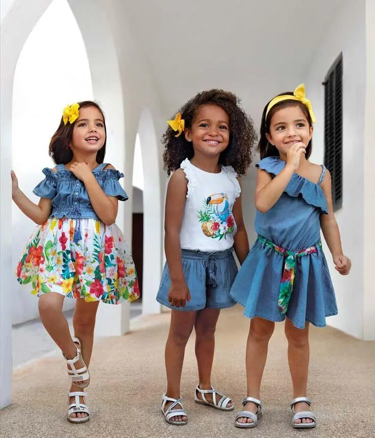
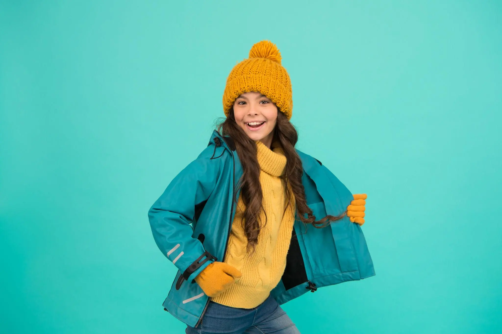

Fashion Tips for Kids
Summer Clothing
Choose lightweight fabrics such as cotton to keep children cool and comfortable during hot weather.

Winter Clothing
Dress children in layers to stay warm while allowing flexibility for changing temperatures.

Choosing the Right Size
Always check measurements and size charts before purchasing children's clothing.
Comfort First
Children's clothing should provide comfort, freedom of movement, and durability for daily activities.